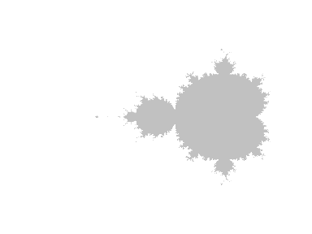
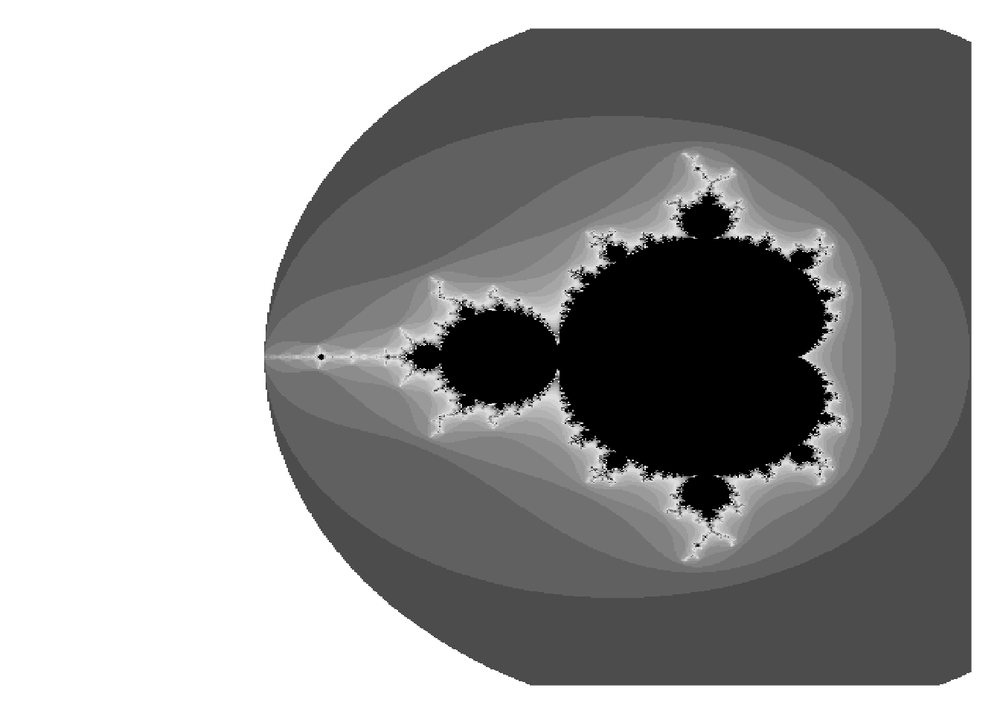
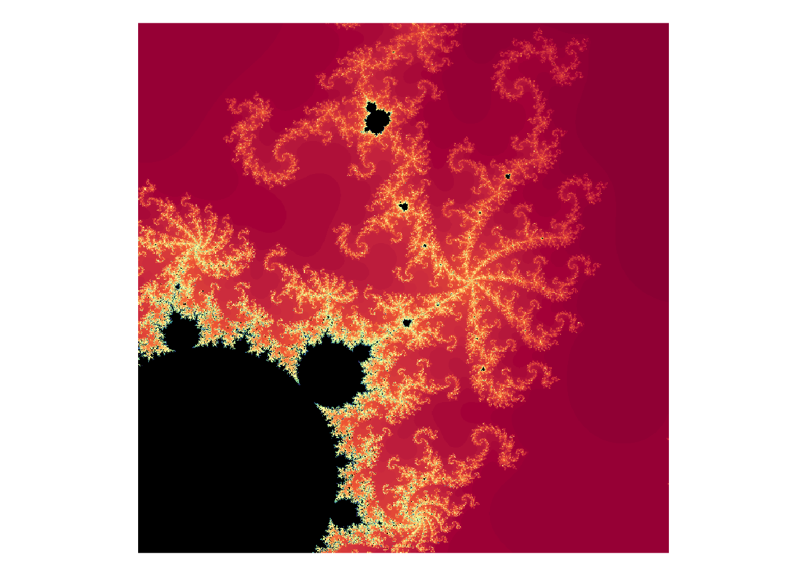
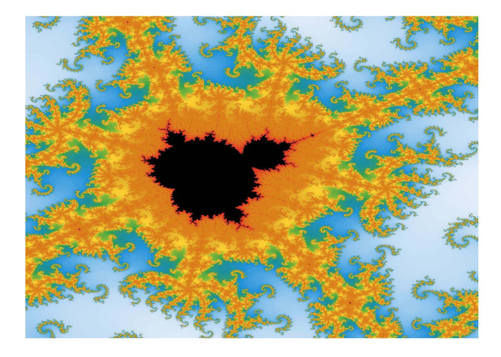

Curious whether your favourite complex number is a member of the Mandelbrot set?
—No? Then probably you just want to draw pretty pictures.
Install with:
devtools::install_github("blmoore/mandelbrot")library(mandelbrot)
mb <- mandelbrot()
plot(mb)
Trippy colours
mb <- mandelbrot(xlim = c(-0.8438146, -0.8226294),
ylim = c(0.1963144, 0.2174996),
iterations = 500)
cols <- mandelbrot_palette(RColorBrewer::brewer.pal(11, "Spectral"))
plot(mb, col = cols)
Don’t like image? Convert to a data.frame for use with ggplot2:
library(ggplot2)
mb <- mandelbrot(xlim = c(-0.8335, -0.8325),
ylim = c(0.205, 0.206), iterations = 1000)
# weird uneven palette made for a heatmap viz:
# https://benjaminlmoore.wordpress.com/2015/04/09/recreating-the-vaccination-heatmaps-in-r/
cols <- c(
colorRampPalette(c("#e7f0fa", "#c9e2f6", "#95cbee",
"#0099dc", "#4ab04a", "#ffd73e"))(10),
colorRampPalette(c("#eec73a", "#e29421", "#e29421", "#f05336","#ce472e"),
bias=2)(90), "black")
df <- as.data.frame(mb)
ggplot(df, aes(x = x, y = y, fill = value)) +
geom_raster(interpolate = TRUE) + theme_void() +
scale_fill_gradientn(colours = cols, guide = "none")